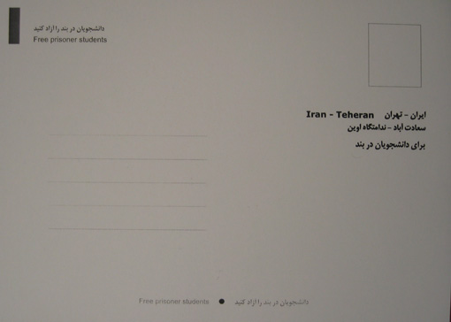

|
|

برای دانشجویان زندانی کارت تبریک عید بفرستید
پنج شنبه29 اسفند 1387
تغییر برای برابری - دانشجویان و همراهان زندانیان دربند کارت تبریکی را تهیه و در میان مردم پخش کرده اند. آنها از همگان خواسته اند: «برای دانشجویان زندانی در اوین کارت تبریک عید بفرستید، عکس دانشجویان را در سفره 7 سین بگذارید.»
برروی این این کارت پستال ها اسامی دانشجویان دربند نوشته شده و پشت آنها نیز نشانی اوبن است و افراد می توانند با زدن تمبر و ارسال پستی آن برای دانشجویان دربند، همبستگی شان را با آنها نشان دهند.
اسامی ذکر شده درکارت پستال : حسین ترکاشوند، مجید توکلی، اسماعیل سلمانپور، کورش دانشیار، عباس حکیم زاده، مهدی مشایخی، نریمان مصطفوی، احمد قصابان، یاسر ترکمن، شبنم مدد زاده، ساناز اللهیاری، محمد پورعبدالله، بهمن خدادای، علی رضا داوودی، حسین سرشومی، ارسلان صادقی، امیرحسین محمدی فر
البته خبرنامه امیرکبیر از آزادی ساناز اللهیاری و امیرحسین محمدی دو دانشجوی طیف چپ ، خبر داد. این دو دانشجو در روز یازدهم اسفندماه بازداشت شده بودند.
امید آزادی سایر دانشجویان و دیگر زندانیان را داریم.
